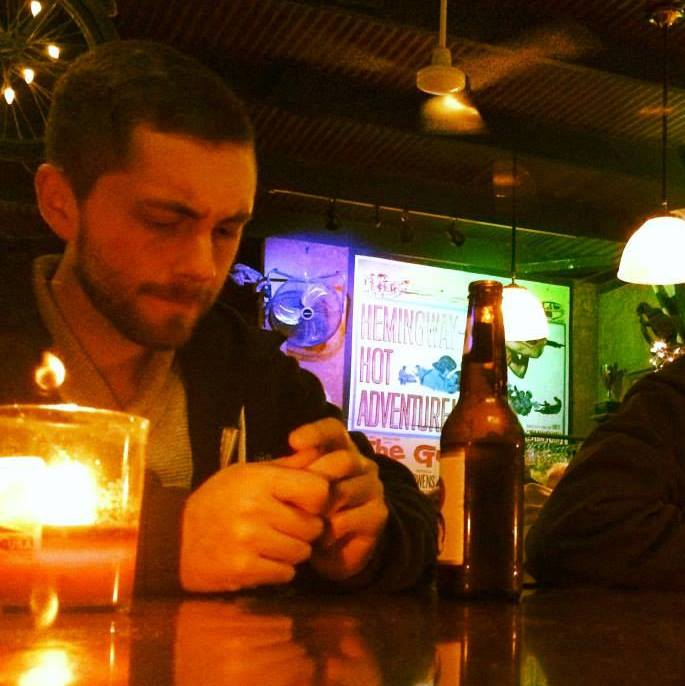

About Me
Hello world, my name is Matthew White.
Currently, I am a student at UNCC's Coding Bootcamp, where I am learning the fundamentals of HTML, CSS, jQuery, JavaScript, and Node.js among many others. I'm taking this opportunity to translate my passion for web development into concrete skills that I can use to transform my ideas into reality.
When I'm not sitting behind my computer, I enjoy clearing my mind in the outdoors, weight training, and basically anything and everything nerdy. But let's be honest, I'm mostly just behind the computer.
I can't wait to show you what I can do.
Connect with Me